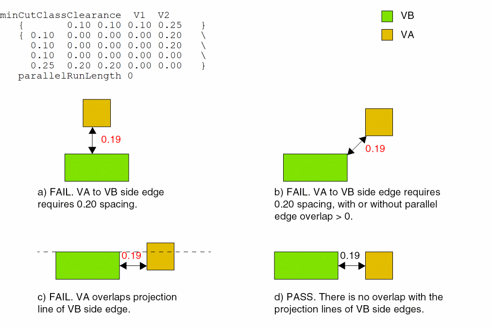
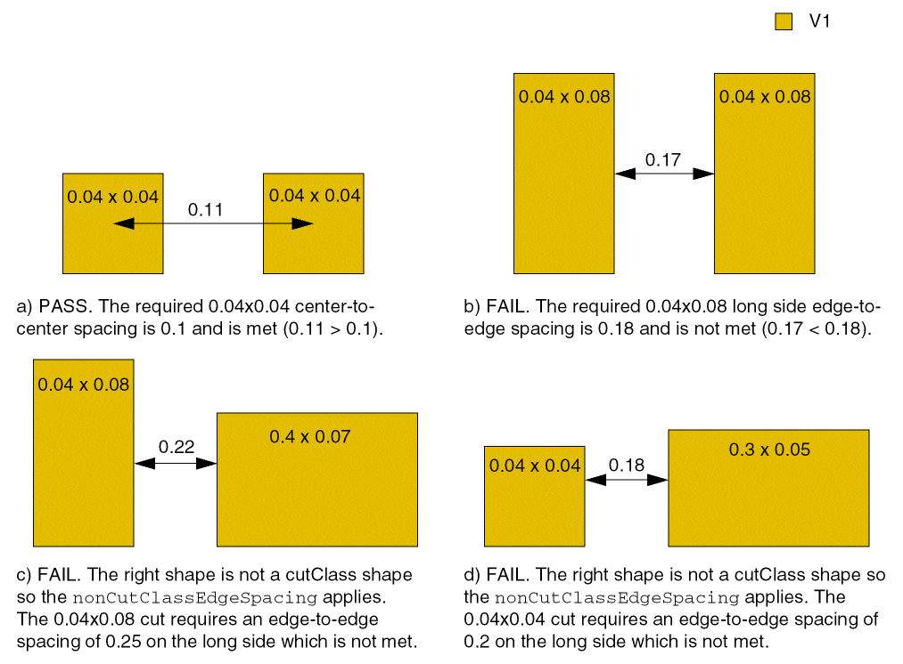
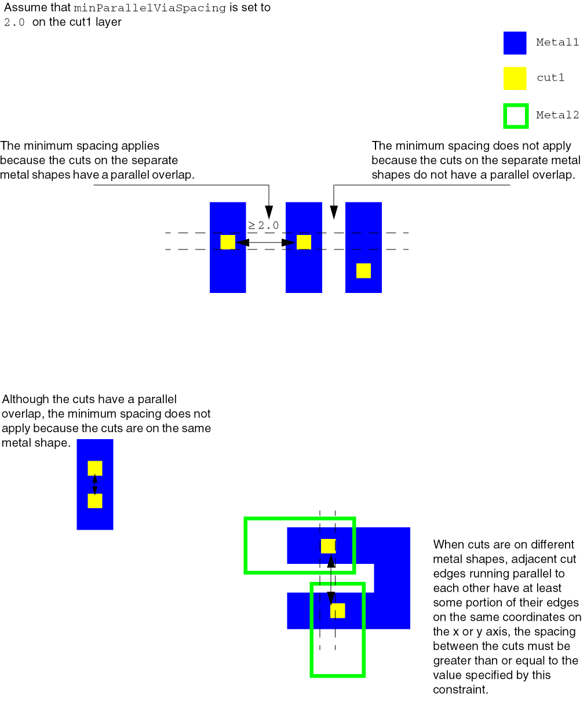
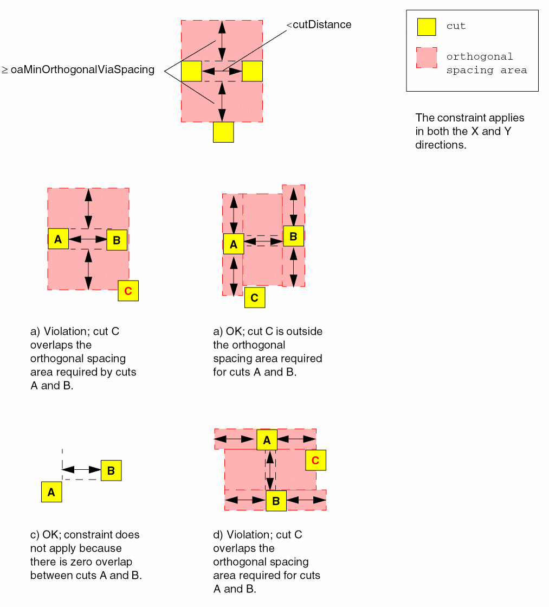
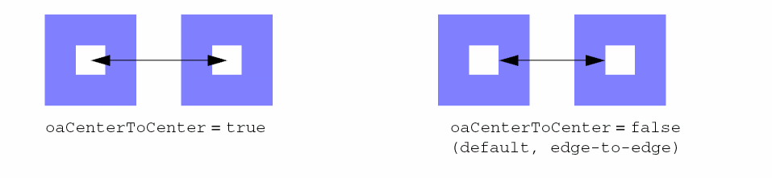
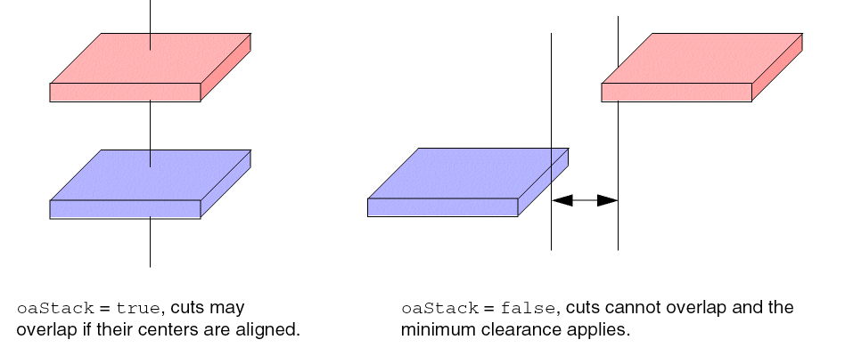
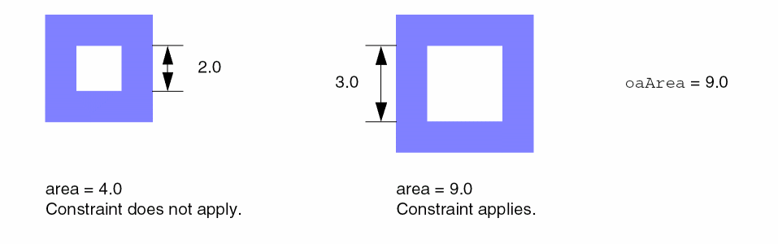
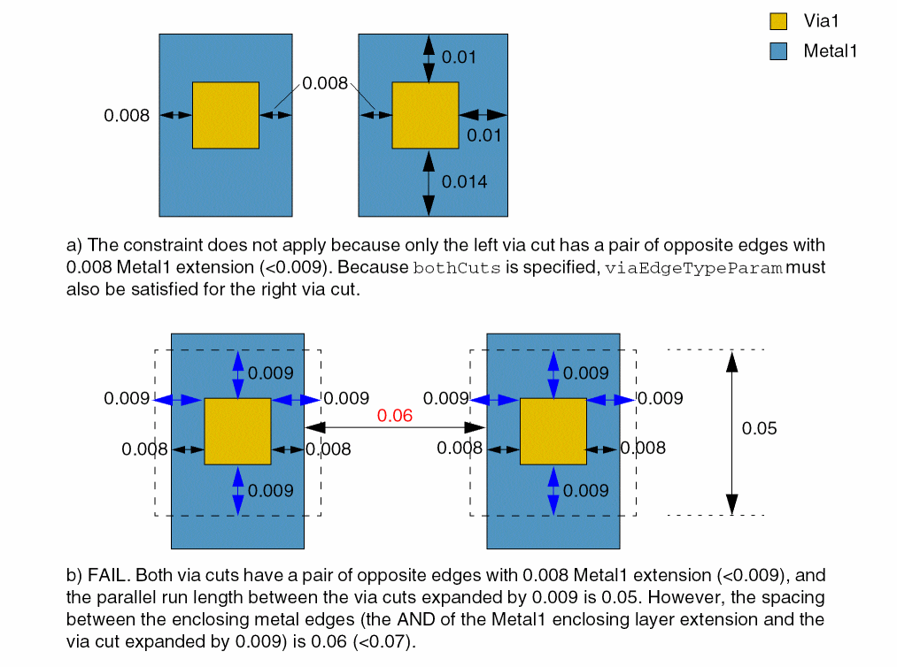

17
Via Construction Constraints
This chapter includes the following constraints:
- allowedCutClass
- cutClass
- forbiddenCutClassSpacingRange
- largeViaClearance
- largeViaSpacing
- maxStressLength
- minAdjacentViaSpacing
- minCutClassClearance
- minCutClassSpacing
- minLargeViaArrayCutSpacing
- minLargeViaArraySpacing
- minLargeViaArrayWidth
- minNeighborViaSpacing
- minParallelViaSpacing
- minParallelWithinViaSpacing
- minRedundantViaSetback
- minSameMetalSharedEdgeViaSpacing
- minViaExtension
- oaMinOrthogonalViaSpacing
- oaMinParallelViaClearance
- oaMinViaClearance
- oaMinViaSpacing
- rectangularLargeViaArraysAllowed
- sameNetLargeViaSpacing
- viaBarAdjacentSpacing
- viaEdgeType
- viaStackingAllowed
- viaStackLimit
allowedCutClass
Specifies whether a cut class on the given cut layer is allowed between shapes of certain widths. If lowerLayer and upperLayer are not specified, the viaDefs for the cut layer are used to determine the lower and upper layers. The lower and upper direction is determined by the wider dimension of the shape.
allowedCutClass constraint need not be defined.allowedCutClass Quick Reference
Value Type
Required Parameter
|
Specifies the cut class width and length.
Type: |
Optional Parameters
|
The metal layer below the cut layer. If not specified, the default stack is used to determine the lower metal layer.
Type: |
|
|
The metal layer above the cut layer. If not specified, the default stack is used to determine the upper metal layer.
Type: |
|
|
The direction of the shape on the lower layer. The direction is determined by the wider dimension of the shape. The constraint applies if the shape has the specified direction. The values that can be specified for the lower direction are:
Default is
Type: |
|
|
The direction of the shape on the upper layer. The direction is determined by the wider dimension of the shape. The constraint applies if the shape has the specified direction. The values that can be specified for the upper direction are:
Default is
Type: |
Example
set_constraint_parameter -name cutClass -DualValue {0.1 0.1}
set_constraint_parameter -name lowerLayer -LayerValue Metal1
set_constraint_parameter -name upperLayer -LayerValue Metal2
set_constraint_parameter -name lowerDirection -IntValue 1
set_constraint_parameter -name upperDirection -IntValue 1
set_layer_constraint -constraint allowedCutClass \
-layer Via1 -TblCols {0.1 0.2} -Int2DTblValue {0.1 1 0 0.2 0 1}
Specifies that a 0.1x0.1 cut class on layer Via1 is allowed between Metal1 and Metal2 wires only if both wires are greater than 0.1 or 0.2 user units in width and direction for both Metal1 and Metal2 wire is horizontal.
cutClass
Defines a cut class name and specifies the via width and via length, in user units, for cuts that belong to the given class.
Cut classes are referenced by other constraints, implicitly by class size, to scope those constraints to cuts of the specific class. In cases where a constraint for a cut layer is scoped to a cut class, the rest of the constraints of that type for that layer must also reference a cut class. There is no fallback for a constraint that does not reference a cut class for any cut sizes not covered by cut class-specific constraints.
cutClass Quick Reference
Value Type
Required Parameter
|
Specifies the cut class name, which is used to reference the cut class by other constraints.
Type: |
Optional Parameters
|
Specifies the equivalent number of cuts of the cut class for the minimum cut rule and calculation of resistance value. If a minimum cut rule requires n cuts, having round up of n/
Type: |
|
|
Specifies that the first value of the dual value is always interpreted as the x-span of the cut class, and the second value is always interpreted as the y-span of the cut class.
Type: |
Example
create_constraint_group -name cutClassgp -opType or -db tech
add_constraint_group -subGroupName cutClassgp -groupType foundry
set_constraint_parameter -name className -StringValue VA set_constraint_parameter -name numCuts -IntValue 1 set_layer_constraint -constraint cutClass -layer Via1 -create true \ -group cutClassgp -DualValue {0.10 0.10}
set_constraint_parameter -name className -StringValue VB set_constraint_parameter -name numCuts -IntValue 2 set_layer_constraint -constraint cutClass -layer Via1 -create true \ -group cutClassgp -DualValue {0.10 0.25}
set_constraint_parameter -name className -StringValue VC set_constraint_parameter -name numCuts -IntValue 4 set_layer_constraint -constraint cutClass -layer Via1 -create true \ -group cutClassgp -DualValue {0.25 0.25}
Creates three cut classes named VA, VB, and VC for layer Via1. VA and VC are square cut classes (0.10 user units2 and 0.25 user units2, respectively). VB is a rectangular cut class of 0.10 x 0.25. The VB shorter side (0.10) is called the end and the longer side (0.25) is considered the side, as shown in Figure 17-1.
Figure 17-1 Large Via Examples for cutClass
forbiddenCutClassSpacingRange
Restricts the spacing between two shapes of a given cut class on the given layer. This constraint can optionally apply only for the spacing between short (or end) edges of a rectangular cut class with a common parallel run length greater than zero.
forbiddenCutClassSpacingRange Quick Reference
Value Types
|
Specifies the spacing between cut shapes that is considered illegal. Any spacing that falls within the range is forbidden.
For example, if |
Required Parameter
|
Specifies that the constraint applies only to cut shapes of the specified cut class.
Type: |
Optional Parameter
|
Specifies that the constraint only applies between short sides of the cut class shapes. If this parameter is specified, the specified cutClass should be a rectangular cut class. Default is
Type: |
Example
set_constraint_parameter -name cutClass -DualValue {0.3 0.4}
set_constraint_parameter -name shortEdgeOnly -BoolValue true
set_layer_constraint -constraint forbiddenCutClassSpacingRange \
-layer v1 -RangeValue {"[0.7 0.9]"}
Specifies that the spacing between two end edges of VB (0.3x0.4) rectangular cut shapes on cut layer v1 with parallel run length greater than 0 must not be greater than or equal to 0.07 or less than or equal to 0.09 user units.
Figure 17-2 Illustration for forbiddenCutClassSpacingRange
Related Information
largeViaClearance
This constraint is obsolete. Use minCutClassClearance instead.
largeViaSpacing
This constraint is obsolete. Use minCutClassSpacing instead.
maxStressLength
Specifies the maximum distance that wire can extend from a cut.
maxStressLength Quick Reference
Value Type
maxStressLength constraints have a Value that specifies the maximum distance that wire can extend from a cut.
minAdjacentViaSpacing
Specifies the required minimum distance in user units between adjacent via cuts. A via cut is considered adjacent if it is within the specified distance from another cut in any direction including a 45-degree angle. Additional distance is required when multiple cuts are adjacent to ensure that geometries are not merged during fabrication.
Optional parameters determine whether via spacing is measured center-to-center or edge-to-edge, whether the constraint applies to only certain connectivity types, and whether the constraint applies to vias on power and ground nets. In some processes, a specific spacing rule may only apply if the vias have no parallel run length, as opposed to being aligned.
minAdjacentViaSpacing Quick Reference
|
net, route, Term, instTerm, blockage, net group, group2group, reflexive, transreflexive, design, foundry |
|
Value Type
|
Specifies the minimum distance required between adjacent vias. |
Required Parameters
|
Specifies the maximum distance apart, in user units, for cuts to be considered adjacent.
Type: |
|
|
Specifies the minimum required number of adjacent cuts for this constraint to apply.
Type: |
The constraint applies when at least numCuts other vias are adjacent within a given distance.
Optional Parameters
|
The constraint applies only to vias with the given dimensions.
Type: |
|
|
The constraint applies when the cut has this number of via cuts that are perfectly aligned horizontally and/or vertically and are less than
Otherwise, the constraint applies when there are at least
Type: |
|
|
Specifies whether the
Type: |
|
|
Determines whether the minimum spacing applies center-to-center (
Type: |
|
|
Specifies the shapes to which this constraint applies, based on their connectivity.
Type: |
|
|
Specifies that the constraint does not apply to power and ground nets. The default is
Type: |
|
|
Specifies that the rule applies only among cuts with no common parallel run length. Default is false.
Type: |
|
|
Specifies that a neighbor cut would belong to any cut classes. Default is false.
Type: |
|
|
Specifies ranges for the xSpan and ySpan values of cuts.
Type: |
|
|
Specifies that the via spacing applies between two cuts only if each of them has at least twoCuts neighbor cuts at less than the
Type: |
|
|
Specifies that the constraint does not apply if all neighbors are on opposite corners.
Type: |
|
Table 17-1 oaConnectivityType Parameter Values for Via Spacing Constraints
| String | Integer Value | Constraint applies to: |
|---|---|---|
Figure 17-3 Connectivity Type Examples for Vias
Examples
- Example 1: minAdjacentViaSpacing Edge-to-edge
- Example 2: minAdjacentViaSpacing Center-to-Center
- Example 3: minAdjacentViaSpacing with noParallelRunLength
Example 1: minAdjacentViaSpacing Edge-to-edge
set_constraint_parameter -name numCuts -IntValue 3
set_constraint_parameter -name distance -Value 0.1
set_constraint_parameter -name oaCenterToCenter -BoolValue false
set_layer_constraint -constraint minAdjacentViaSpacing -layer VIA1 -Value 0.11
Extra space is needed for any via with three or more adjacent cuts that are within 0.1. The adjacent vias require spacing greater than or equal to 0.11.
In the following figure, each of the cases shows at most two adjacent vias to any given via, therefore only default spacing is needed.
Figure 17-4 Illustration for minAdjacentViaSpacing Edge-to-edge
In the following figure, all the cases show one or more cuts with three or more adjacent cuts and require the minAdjacentViaSpacing spacing, instead of the smaller default spacing.
Figure 17-5 Illustration of minAdjacentViaSpacing with numCuts
Example 2: minAdjacentViaSpacing Center-to-Center
set_constraint_parameter -name numCuts -IntValue 2
set_constraint_parameter -name distance -Value 0.2
set_constraint_parameter -name oaCenterToCenter -BoolValue true
set_layer_constraint -constraint minAdjacentViaSpacing -layer VIA1 -Value 0.2
Extra space is needed for any via with two or more adjacent cuts that are within 0.2, measured center-to-center. The adjacent vias require spacing greater than or equal to 0.2, measured center-to-center.
The following figure illustrates how center-to-center measurements are made for determining the number of adjacent vias within distance and the spacing needed for vias that meet the criteria for the minAdjacentViaSpacing constraint.
Figure 17-6 Illustration for minAdjacentViaSpacing with oaCenterToCenter
Example 3: minAdjacentViaSpacing with noParallelRunLength
set_constraint_parameter -name numCuts -IntValue 2
set_constraint_parameter -name distance -Value 0.2
set_constraint_parameter -name oaCenterToCenter -BoolValue true
set_constraint_parameter -name noParallelRunLength -BoolValue true
set_layer_constraint -constraint minAdjacentViaSpacing \
-layer VIA1 -Value 0.2
Specifies that the minimum adjacent via spacing measured center-to-center must be 0.2 user units if there are at least two adjacent vias with no parallel run length within 0.2 user units.
Figure 17-7 Illustration for minAdjacentViaSpacing with noParallelRunLength
Related Information
minCutClassClearance
Specifies the minimum spacing between cuts of different classes on different layers.
minCutClassClearance Quick Reference
Value Type
Optional Parameters
|
Specifies whether the cut spacing is measured from cut-center-to-cut-center (1) or cut-edge-to-cut-edge (0). By default, cut spacing is performed cut-edge-to-cut-edge. The column header (
Type: |
|
|
Specifies the default cut spacing between cut classes.
Type: |
|
|
Specifies the vias for which this constraint does not apply, based on their connectivity.
Type: |
|
|
Specifies the shapes to which this constraint applies, based on their connectivity.
Type: |
|
|
Specifies that the constraint applies only if the parallel run length (prl) between the two via cuts is greater than or equal to this value. Both positive and negative values are allowed.
If multiple Actual length (prl) Use constraint value for length <-1 The constraint does not apply.
Type: |
|
|
Specifies that the minimum cut class spacing between cut classes on different layers optionally applies only to the cut edges of the layer1 shape enclosed by the metal layer above with an enclosure greater than 0, and that the cut edges have a nonzero parallel overlap with cut shapes on layer2. The enclosing metal layer condition does not apply to cut shapes that do not have a parallel overlap. |
|
|
Specifies the spacing between cut class shapes and non-cut class shapes (for example, blockages). |
|
|
Specifies an extension distance that is applied to cut shapes of certain cut classes before cut spacing is measured. The table layout is identical to the constraint value table. This parameter is valid only if there is no parallel overlap between cut shapes. |
|
|
Specifies the cut size required for the cut class. If there are n rows and m columns in the constraint value table, this parameter should specify (n+m) extension values. |
|
|
Specifies that the constraint should be applied as specified for each cut class combination.
Type: |
|
|
Specifies an array of DualValue pairs. The first value in each pair specifies the width of a square cut class. The second value specifies the spacing (or clearance) required between completely aligned horizontal or vertical cuts of the cut class. |
|
Example
# edge-to-edge spacing by default
# parallel run length >= 0 set_constraint_parameter -name parallelRunLength -Value 0 set_layerpair_constraint -constraint minCutClassClearance \ -layer1 V1 -layer2 V2 \
-TblCols { 0.10 0.10 0.10 0.25 } \
-TwoDTblValue { 0.10 0.00 0.00 0.00 0.20 \
0.10 0.00 0.00 0.00 0.20 \
0.10 0.00 0.00 0.00 0.00 \
0.25 0.20 0.20 0.00 0.00 }
Sets the minimum clearance between VA (0.1 x 0.1) and VB (0.1 x 0.25) cut classes on V1 and V2 as follows:
- 0.20 user units is the edge-to-edge spacing between the side (long) edge of a VB via to a VA via.
-
0.00 user units is the edge-to-edge spacing for all other combinations.
Figure 17-8 Illustration for minCutClassClearance with parallelRunLength
minCutClassSpacing
Specifies the minimum spacing between cuts of different classes on the same layer. This constraint enables cut class aware spacing rules. Spacing requirements depend on the following factors:
- Size of the cut (the cut class).
- For rectangular cuts, which edge (long or short) is being used.
- Whether the two cuts are on the same metal shape (sameMetal) or on the same net (sameNet)
- Whether the rules are being specified as center-to-center or edge-to-edge.
- Whether the parallel run length is greater than 0
In some processes, the spacing between two square cuts of a particular cut class which are perfectly aligned vertically or horizontally is different from the spacing for unaligned cuts.
minCutClassSpacing Quick Reference
Value Type
|
Specifies the minimum spacing between cuts of different classes on the same layer. The column header ( |
Required Parameters
Optional Parameters
|
Specifies whether the cut spacing is measured from cut-center-to-cut-center (1) or cut-edge-to-cut-edge (0). By default, cut spacing is performed cut-edge-to-cut-edge. The column header (
Type: |
|
|
Stores the cut class dimensions in an array of DualValue, each with the width and length of a cut class.
Type: |
|
|
Specifies how the constraint should be applied for each cut class combination as
Type: |
|
|
Specifies an extension distance applied only to cut shapes of rectangular cut classes before measuring cut spacing. The table layout is identical to the constraint value table.
Type: |
|
|
Specifies the default cut spacing between cut classes.
Type: |
|
|
Specifies an array of DualValue pairs, if set. The first value in each DualValue is the width of a square cut class. The second value is the spacing (or clearance), in user units, required between completely aligned horizontal or vertical cuts of the cut class.
Type: |
|
|
Determines the vias to which this constraint does not apply. This parameter is mutually exclusive with
Type: |
|
|
Determines the shapes to which the constraint applies. This parameter is mutually exclusive with
Type: |
|
|
Specifies that the constraint applies only if the parallel run length (prl) between the two via cuts is greater than or equal to this value. Both positive and negative values are allowed.
If multiple Actual length (prl) Use constraint value for length <-1 The constraint does not apply.
Type: |
|
|
Specifies the direction in which the completely aligned spacing applies.
Valid Values:
The
Type: |
|
|
Specifies whether the constraint applies only between shapes on the same mask (
Type: |
|
|
Specifies the spacing, in user units, between cutClass shapes and non-cutClass shapes (for example, blockages).
Type: |
|
|
Allows both horizontal and vertical offsets between the cut shapes to be used as parallel run lengths, if the parallel run length between the cut shapes is less than zero. When this parameter is specified, two separate checks are performed using the two offset values. If horizontal offset is used as the parallel run length, required spacing is looked up by taking into account the vertical edges facing each other, and when vertical offset is used as the parallel run length, required spacing is looked up by taking into account the horizontal edges facing each other. The maximum of the spacing values thus obtained is the required spacing. If this parameter is not specified, the smaller of the two offsets is considered as the parallel run length and spacing is looked up using this value. Because the edges that are facing each other cannot be determined, the maximum of the four possible spacing values is compared with the Euclidean spacing.
If this parameter is specified for one
minCutClassSpacing constraint defined on a particular layer, it must be specified for all minCutClassSpacing constraints defined on that layer.
Type: |
|
Examples
- Example 1: minCutClassSpacing for a Square Cut Class
- Example 2: minCutClassSpacing for a Square and a Rectangular Cut Class
- Example 3: minCutClassSpacing for a Rectangular Cut Class
- Example 4: minCutClassSpacing for Three Cut Classes
- Example 5: minCutClassSpacing with nonCutClassEdgeSpacing
- Example 6: minCutClassSpacing with bothNegativeParallelRunLengths
Example 1: minCutClassSpacing for a Square Cut Class
# default is edge-to-edge measurements. Change this to
# center-to-center (value of 1 enables center-to-center)
set_constraint_parameter -name cutClassCenterToCenter \
-TblCols { 0.10 0.10 } \
-Int2DTblValue { 0.10 1 1 \
0.10 1 1 }
# parallel run length can be >= 0. This is the default.
set_constraint_parameter -name parallelRunLength -Value 0
set_layer_constraint -constraint minCutClassSpacing \
-layer V1 \
-TblCols { 0.10 0.10 } \
-TwoDTblValue { 0.10 0.20 0.20 \
0.10 0.20 0.20 }
Specifies 0.20 user units as the cut-to-cut spacing between two VA vias (0.10x0.10), measured center-to-center.
Example 2: minCutClassSpacing for a Square and a Rectangular Cut Class
create_constraint_group -name cutClassSpacing -opType or -db tech add_constraint_group -subGroupName cutClassSpacing -groupType foundry
# edge-to-edge spacing by default
# case 1: no parallel run length
set_constraint_parameter -name parallelRunLength -Value -0.001
set_layer_constraint -constraint minCutClassSpacing \
-layer V1 -group cutClassSpacing \
-TblCols { 0.10 0.25 0.25 0.25 } \
-TwoDTblValue { 0.10 0.15 0.15 0.15 0.15 \
0.25 0.15 0.15 0.15 0.15 \
0.25 0.15 0.15 0.50 0.50 \
0.25 0.15 0.15 0.50 0.50} -create true
# case 2: parallel run length > 0
set_constraint_parameter -name parallelRunLength -Value 0.001
set_layer_constraint -constraint minCutClassSpacing \
-layer V1 -group cutClassSpacing \
-TblCols { 0.10 0.25 0.25 0.25 } \
-TwoDTblValue { 0.10 0.40 0.40 0.30 0.30 \
0.25 0.40 0.15 0.15 0.15 \
0.25 0.30 0.15 0.50 0.50 \
0.25 0.30 0.15 0.50 0.50} -create true
Assumes that a rectangular cut class (0.1x0.25) and square cut class (0.25x0.25) are defined. The following conditions apply:
- 0.30 user units is the edge-to-edge spacing between the end edge (0.10) of a VB via and a VC via with parallel edge overlap > 0
- 0.40 user units is the edge-to-edge spacing between the end edge of a VB via to another VB via with parallel edge overlap > 0
- 0.50 user units is the edge-to-edge spacing between a VC via to another VC via
- 0.15 user units is the edge-to-edge spacing for the rest of the combinations
To specify the constraint using Tcl, two minCutClassSpacing constraints must be set in an OR constraint group, one for cuts with no parallel run length (parallelRunLength parameter set to -0.001) and the other for cuts with parallel run length > 0 (parallelRunLength parameter set to 0.001). When setting the constraint values, include -create true to ensure that each constraint value is added, instead of overwriting a previously set value.
Example 3: minCutClassSpacing for a Rectangular Cut Class
create_constraint_group -name cutClassSpacing -opType or -db tech add_constraint_group -subGroupName cutClassSpacing -groupType foundry
# edge-to-edge spacing by default
# case 1: no parallel run length
set_constraint_parameter -name parallelRunLength -Value -0.001
set_layer_constraint -constraint minCutClassSpacing \
-layer V1 -group cutClassSpacing \
-TblCols { 0.10 0.25 } \
-TwoDTblValue { 0.10 0.15 0.15 \
0.25 0.15 0.15 } -create true
# case 2: parallel run length > 0
set_constraint_parameter -name parallelRunLength -Value 0.001
set_layer_constraint -constraint minCutClassSpacing \
-layer V1 -group cutClassSpacing \
-TblCols { 0.10 0.25 } \
-TwoDTblValue { 0.10 0.15 0.15 \
0.25 0.15 0.40 } -create true
Assumes that a rectangular cut class (VB) is defined (0.1x0.25). The following conditions apply:
- 0.40 user units is the edge-to-edge spacing between the side edge of a VB via to a side edge of another VB via with parallel edge overlap > 0
- 0.15 user units is the edge-to-edge spacing for all other VB of the combinations
To specify the constraint using Tcl, two minCutClassSpacing constraints must be set in an OR constraint group, one for cuts with no parallel run length (parallelRunLength parameter set to -0.001) and the other for cuts with parallel run length > 0 (parallelRunLength parameter set to 0.001). When setting the constraint values, include -create true to ensure that each constraint value is added, instead of overwriting a previously set value.
Example 4: minCutClassSpacing for Three Cut Classes
create_constraint_group -name cutClassSpacing -opType or -db tech add_constraint_group -subGroupName cutClassSpacing -groupType foundry
# This section sets the constraint with parallel run length = 0 (no overlap)
set_constraint_parameter -name parallelRunLength -Value -0.001
set_constraint_parameter -name cutClassCenterToCenter \
-TblCols { 0.1 0.1 0.1 0.25 0.25 0.25} \
-Int2DTblValue { 0.1 1 1 0 0 0 0
0.1 1 1 0 0 0 0
0.1 0 0 0 0 0 0
0.25 0 0 0 0 0 0
0.25 0 0 0 0 1 1
0.25 0 0 0 0 1 1 }
set_layer_constraint -constraint minCutClassSpacing \
-layer V1 -hardness hard -group cutClassSpacing -create true \
-TblCols { 0.1 0.1 0.1 0.25 0.25 0.25} \
-TwoDTblValue { 0.1 0.2 0.2 0.15 0.15 0.15 0.15
0.1 0.2 0.2 0.15 0.15 0.15 0.15
0.1 0.15 0.15 0.15 0.15 0.15 0.15
0.25 0.15 0.15 0.15 0.15 0.15 0.15
0.25 0.15 0.15 0.15 0.15 0.5 0.5
0.25 0.15 0.15 0.15 0.15 0.5 0.5 }
# This section sets the constraint with parallel run length > 0
set_constraint_parameter -name parallelRunLength -Value 0.001
set_constraint_parameter -name cutClassCenterToCenter \
-TblCols { 0.1 0.1 0.1 0.25 0.25 0.25} \
-Int2DTblValue { 0.1 1 1 0 0 0 0
0.1 1 1 0 0 0 0
0.1 0 0 0 0 0 0
0.25 0 0 0 0 0 0
0.25 0 0 0 0 1 1
0.25 0 0 0 0 1 1 }
set_layer_constraint -constraint minCutClassSpacing \
-layer V1 -hardness hard -group cutClassSpacing -create true \
-TblCols { 0.1 0.1 0.1 0.25 0.25 0.25} \
-TwoDTblValue { 0.1 0.2 0.2 0.3 0.15 0.15 0.15
0.1 0.2 0.2 0.3 0.15 0.15 0.15
0.1 0.3 0.3 0.4 0.4 0.3 0.3
0.25 0.15 0.15 0.4 0.15 0.15 0.15
0.25 0.15 0.15 0.3 0.15 0.5 0.5
0.25 0.15 0.15 0.3 0.15 0.5 0.5 }
Assumes three cut classes are defined for the layer: VA, VB, and VC. VA and VC are square cut classes (0.1x0.1 and 0.25x0.25, respectively). VB is a rectangular cut class (0.1x0.25). The following conditions apply:
- 0.20 user units is the cut-to-cut spacing between 2 VA vias (0.1x0.1), measured center-to-center
- 0.50 user units is the cut-to-cut spacing between 2 VC vias (0.25x0.25), measured center-to-center
- 0.30 user units is the edge-to-edge spacing between the end edge (0.1) of a VB via and a VA or VC via with parallel edge overlap > 0
- 0.40 user units is the edge to edge spacing between the end edge (0.1) of a VB via & any edges of another VB via with parallel edge overlap > 0
- 0.15 user units is the edge-to-edge spacing for the rest of the combinations. Notice that it is a symmetrical table. For instance, both the VA column to VB END and the VB END column to VA have 0.30 μm when parallel edge overlap > 0
To specify the constraint using Tcl, two minCutClassSpacing constraints must be set in an OR constraint group, one for cuts with no parallel run length (parallelRunLength parameter set to -0.001) and the other for cuts with parallel run length > 0 (parallelRunLength parameter set to 0.001). For each constraint, parameters must be set to specify center-to-center or edge-to-edge cut spacing and the parallel run length, which applies to the cut spacing. When setting the constraint value, include -create true to ensure that each constraint value is added, instead of overwriting a previously set value.
Example 5: minCutClassSpacing with nonCutClassEdgeSpacing
# nonCutClassEdgeSpacing
# edge-to-edge spacing for a 0.04x0.04 cut class or
# a 0.04x0.08 cut class to a non-cut class shape (cut or blockage)
# pairs are <edgelength> <spacing>
# first two pairs are for 0.04x0.04 square cut class; spacing 0.2
# second two pairs are for 0.04x0.08 rectangular cut class
# the spacing to the short edge (0.04) is 0.22
# the spacing to the long edge (0.08) is 0.25
set_constraint_parameter -name nonCutClassEdgeSpacing \
-ValueArrayValue { 0.04 0.2 \
0.04 0.2 \
0.04 0.22 \
0.08 0.25 }
# default is edge-to-edge measurements. Change this to
# center-to-center (value of 1 enables center-to-center)
set_constraint_parameter -name cutClassCenterToCenter \
-TblCols { 0.04 0.04 0.04 0.08} \
-Int2DTblValue { 0.04 1 1 0 0 \
0.04 1 1 0 0 \
0.04 0 0 0 0 \
0.08 0 0 0 0 }
# constraint value
set_layer_constraint -constraint minCutClassSpacing \
-layer V1 \
-TblCols { 0.04 0.04 0.04 0.08} \
-TwoDTblValue { 0.04 0.1 0.1 0.15 0.15 \
0.04 0.1 0.1 0.15 0.15 \
0.04 0.15 0.15 0.18 0.18 \
0.08 0.15 0.15 0.18 0.18 }
Assumes two cut classes are defined for the layer: VA and VB. VA is a square cut class (0.04x0.04). VB is a rectangular cut class (0.04x0.08). The following conditions apply:
- 0.1 user units is the cut-to-cut spacing between two VA vias (0.04x0.04), measured center-to-center
- 0.15 user units is the edge-to-edge spacing between the end edge (0.04) or side edge (0.08) of a VB via and a VA via
- 0.18 user units is the edge-to-edge spacing between two VB vias
- 0.2 user units is the spacing between a VA via and a non-cut class shape
- 0.22 user units is the spacing between the end edge (0.04) of a VB via and a non-cut class shape
-
0.25 user units is the spacing between the side edge (0.08) of a VB via and a non-cut class shape

Example 6: minCutClassSpacing with bothNegativeParallelRunLengths
create_constraint_group -name cutClassSpacing -opType or -db tech
add_constraint_group -subGroupName cutClassSpacing -groupType foundry
# This section sets the constraint with parallel run length = -0.1
set_constraint_parameter -name parallelRunLength -Value -0.1
set_constraint_parameter -name bothNegativeParallelRunLengths -BoolValue true
set_layer_constraint -constraint minCutClassSpacing \
-layer V1 -hardness hard -group cutClassSpacing -create true \
-TblCols { 0.1 0.2 0.2 0.4} \
-TwoDTblValue { 0.1 0.2 0.2 0.2 0.22 \
0.2 0.2 0.2 0.21 0.23 \
0.2 0.2 0.21 0.3 0.3 \
0.4 0.21 0.23 0.3 0.3 }
# This section sets the constraint with parallel run length = -0.2
set_constraint_parameter -name parallelRunLength -Value -0.2
set_constraint_parameter -name bothNegativeParallelRunLengths -BoolValue true
set_layer_constraint -constraint minCutClassSpacing \
-layer V1 -hardness hard -group cutClassSpacing -create true \
-TblCols { 0.1 0.2 0.2 0.4} \
-TwoDTblValue { 0.1 0.2 0.2 0.2 0.22 \
0.2 0.2 0.2 0.21 0.24 \
0.2 0.2 0.21 0.3 0.3 \
0.4 0.21 0.23 0.3 0.3 }
Defines spacing between two cut shapes of type VA (0.2x0.1) and VB (0.2x0.4) with parallel run length (PRL) -0.1 and -0.2.
Related Information
minLargeViaArrayCutSpacing
Specifies the minimum distance, edge-to-nearest-edge between cuts in a large via array. This constraint is associated with a cut layer and only applies within via arrays that satisfy the specified minimum and maximum requirement for via cuts.
minLargeViaArrayCutSpacing Quick Reference
Value Type
minLargeViaArrayCutSpacing constraint has a Value that represents the cut-to-cut spacing, in user units, within large via arrays that satisfy the specified minimum and maximum requirement for via cuts.

| Format | Example |
|---|---|
set_constraint_parameter -name minNumCuts -IntValue |
Parameters
-
maxNumCuts(IntValue) specifies that the constraint applies only if the number of rows and columns in the via cut array is less than or equal to this value. -
minNumCuts(IntValue) specifies that the constraint applies only if the number of rows and columns in the via cut array is greater than or equal to this value.
minLargeViaArraySpacing
Specifies the minimum spacing required between cut arrays (arraySpacing). The constraint only applies to the spacing between cut arrays, not between cuts within an array (cutSpacing). This constraint is associated with a cut layer.
Multiple via array spacing values can be specified for a cut layer, based on different array sizes.
minLargeViaArraySpacing Quick Reference
Value Type
minLargeViaArraySpacing constraints have a OneDTblValue to represent the large via array spacing that is required for various cut array sizes. The table lookup key is the number of cuts in the shortest direction of the via array (numCuts in the diagram below) and the table value is the required minimum array spacing.
For example, the number of cuts in a square NxN array is N, rather than the total number of cuts in the array. If neighboring cut arrays have different sizes, the number of cuts in the wider array is used to determine the array-to-array spacing. A cut array can be truncated if it does not fit within a wire. In this event, the large via array-to-array spacing is still used in placing the truncated array

Parameters
-
cutClass(DualValue, optional) The constraint applies only to the cut class of the given dimensions. -
parallelOverlap(BoolValue, optional) The constraint applies only when there is a parallel edge overlap > 0. -
intraArrayCutSpacing(IntValue, optional) If this parameter is specified then the cuts which are spaced by less than this value, are considered to be part of the same array.
Examples
- Example 1 — minLargeViaArraySpacing example
- Example 2 — minLargeViaArraySpacing example using intraArrayCutSpacing
Example 1 — minLargeViaArraySpacing example
This example sets the minimum large via array spacing on Via1 according to the values in the following table.
| Number of Cuts | Minimum Spacing Between Cut Arrays |
|---|---|
| Format | Example |
|---|---|
set_layer_constraint -constraint minLargeViaArraySpacing \ |
Example 2 — minLargeViaArraySpacing example using intraArrayCutSpacing
minLargeViaArrayWidth
Specifies the minimum width of a via array for it to be considered a large via array and must be built with the spacing given by the minLargeViaArraySpacing constraint. The minimum width applies to the intersection of the top and bottom metal layers in the via that are connected by the cut layer.
minLargeViaArrayWidth Quick Reference
Value Type
The minLargeViaArrayWidth constraint has a Value that is the minimum width, in user units, of a large via array.
| Format | Example |
|---|---|
set_layer_constraint -constraint minLargeViaArrayWidth \ |
|
|
|
spacings( |
Parameters
-
cutClass(DualValue, optional) The constraint applies only to the cut class of the given dimensions. -
parallelOverlap(BoolValue, optional) The constraint applies only when there is a parallel edge overlap > 0.
Example
| Format | Example |
|---|---|
set_layer_constraint -constraint minLargeViaArrayWidth \ |
|
|
|
spacings( |
minNeighborViaSpacing
Specifies the minimum spacing between two shapes on a given cut layer that have a common neighboring cut shape within a given distance. The distance and spacing is optionally measured from center-to-center of the cut shapes. By default, the distance and spacing are measured from nearest cut edge-to-cut edge.
minNeighborViaSpacing Quick Reference
Value Type
minNeighborViaSpacing constraints have a Value that represents the minimum spacing between the two shapes on the cut layer.
Parameters
-
distanceWithin(Value, required) specifies that the constraint applies only when a common neighbor via is less than or equal to this distance from the two cut shapes. -
oaCenterToCenter(BoolValue, optional) determines whether the spacing and distance are measured center-to-center (true) or edge-to-edge (false, default).
Example
This example requires a 0.4 neighbor via spacing if a common neighbor via is within 0.3 user units measured center-to-center.
minParallelViaSpacing
Specifies the minimum spacing for vias that have parallel edges with an overlap greater than 0. This constraint applies to cut layers only when vias do not share the same metal above or below and are on different nets.
Either minParallelWithinViaSpacing or minParallelViaSpacing can be specified for a cut layer, but not both.
minParallelViaSpacing Quick Reference
Value Type
minParallelViaSpacing constraints have a Value that represents the minimum required spacing for vias with overlapping parallel edges on the given cut layer.
Parameters
-
oaConnectivityType(StringAsIntValue, optional) specifies the shapes to which this constraint applies, based on their connectivity, as given in Table 17-1. This parameter is mutually exclusive withexceptConnectivityType. -
exceptConnectivityType(StringAsIntValue, optional) specifies the vias for which this constraint does not apply, based on their connectivity, as given in Table 17-2. If this argument is not specified, same island vias are excluded. This parameter is mutually exclusive withoaConnectivityType.
exceptConnectivityType Parameter Values
| String | Integer Value | Constraint does not apply to: |
|---|---|---|
Example
This example sets the minimum spacing to 2.0 between cuts on layer cut1 that meet the following conditions:
- The cuts are not on the same metal shape
-
The cuts have a parallel overlap (adjacent cut edges running parallel to each other have at least some portion of their edges on the same coordinates on the
xoryaxis)
Figure 17-9Format Example set_layer_constraint -constraint minParallelViaSpacing \
-layer cut1 -Value 2.0LAYER cut1
TYPE CUT ;
SPACING 2.0 PARALLELOVERLAP ;spacings( ( minParallelViaSpacing cut1 2.0 ) )

minParallelWithinViaSpacing
Specifies the spacing required between a cut and a neighbor cut when the edge of the neighbor cut is within a given distance.
Either minParallelWithinViaSpacing or minParallelViaSpacing can be specified for a cut layer, but not both.
minParallelWithinViaSpacing Quick Reference
Value Type
minParallelWithinViaSpacing constraints have a Value that represents the required spacing between a cut and a neighbor cut when the conditions are met.
Parameters
-
oaCutDistance(Value) specifies that the constraint applies only when there is a neighbor cut edge that is less than this distance from the edge of a cut. -
exceptConnectivityType(StringAsIntValue, optional) specifies that the constraint applies to all vias except same net vias. The only valid value for this parameter issameNetConnectivity. By default, the constraint applies to all vias.
Example
Figure 17-10 minParallelWithinViaSpacing Example
minRedundantViaSetback
Specifies the metal enclosure required on a metal layer when redundant vias are aligned on the same edge of that metal layer.
minRedundantViaSetback Quick Reference
Value Type
minRedundantViaSetback constraints have a OneDTblValue. The lookup key (width) represents the width of the wide metal and the value for the table represents the redundant via wide enclosure width in user units. Layer1 is the cut layer and layer2 is the metal layer.
Parameters
-
distanceMeasureType(IntValue, optional) specifies the spacing measurement method as Euclidean (0, default) or Manhattan (1). For information on this parameter, see “Euclidean and Manhattan Spacing Constraints”.
minSameMetalSharedEdgeViaSpacing
Specifies the spacing between two via cuts that have a common projection between them and have neighbor wire(s) within parWithin distance from them on the same edge. This spacing must be greater than or equal to oaMinViaSpacing.
minSameMetalSharedEdgeViaSpacing Quick Reference
Value Type
minSameMetalSharedEdgeViaSpacing constraints have a Value that represents the required spacing.
Parameters
-
parallelEdgeWithin(Value) specifies the parWithin distance. -
aboveOnly(BoolValue, optional) The constraint applies only if the via cuts have a common above metal routing layer. -
cutClass(DualValue, optional) The constraint applies only to the cut class of the given dimensions. -
exceptSameViaCount(IntValue, optional) The constraint does not apply if there are greater than or equal to this number of cuts having common same metal on both the above and below layers. -
exceptTwoEdges(BoolValue, optional) The constraint does not apply if the cuts have two neighbor wires within parWithin distance on opposite sides.
Example
Figure 17-11 minSameMetalSharedEdgeViaSpacing Examples
minViaExtension
Specifies the minimum extension of a shape on layer1 over a shape on layer2 for the following cases:
- The layer1 extension on three sides must be greater than or equal to a given value and the extension on the remaining side must be greater than or equal to a second value.
- The extension of two opposite sides must be greater than or equal to a given value, and for the remaining two sides, the extension of one side must be greater than or equal to a second value and the extension of the other side must be greater than or equal to a third value.
- A different minimum extension is required for a diagonal edge compared with non-diagonal edges.
minViaExtension Quick Reference
Value Type
minViaExtension constraints have a ValueArrayValue that represents the minimum extensions required for the viaExtensionType parameter.
Table 17-2 minViaExtension ValueArrayValue by viaExtensionType
| viaExtensionType | ValueArrayValue |
|---|---|
|
{ |
|
|
{ |
|
|
{
{
{ |
Parameters
-
viaExtensionType(StringAsIntValue, required) specifies the type of minimum via extension that the constraint represents, as given in Table 17-4.
minViaExtension Types
Figure 17-12 Examples of minViaExtension Types
Example
The following example sets the minimum via extension for Metal3 over Via2. Three sides must have a minimum extension of 0.04 and the fourth side has a minimum extension of 0.06.
set_constraint_parameter -name viaExtensionType -StringAsIntValue oneThree
set_layerpair_constraint -group foundry -layer1 Metal3 -layer2 Via2 \
-constraint minViaExtension -hardness hard -ValueArrayValue { 0.04 0.06}
The following example sets the minimum via extension for Metal3 over Via3. Two opposite sides must have a minimum extension of 0.04, and the two remaining sides must have a minimum extension of 0.06 and 0.08.
set_constraint_parameter -name viaExtensionType -StringAsIntValue oneOneTwo
set_layerpair_constraint -group foundry -layer1 Metal3 -layer2 Via3 \
-constraint minViaExtension -hardness hard -ValueArrayValue { 0.04 0.06 0.08}
The following example sets the minimum via extension for Metal4 over Via3. Two opposite sides must have a minimum extension of 0.04, and two remaining non-diagonal sides must have a minimum extension of 0.05 and 0.06. Any diagonal edges must have a minimum extension of 0.07.
set_constraint_parameter -name viaExtensionType -StringAsIntValue diagonal
set_layerpair_constraint -group foundry -layer1 Metal4 -layer2 Via3 \
-constraint minViaExtension -hardness hard -ValueArrayValue { 0.04 0.05 0.06 0.07}
oaMinOrthogonalViaSpacing
Sets the minimum spacing between an overlapping via cut pair and any other via cut shape based on the distance between the cut pair.
When two cuts overlap, either horizontally or vertically, the distance between them determines the orthogonal spacing, as defined in the lookup table. The spacing applies from opposite edges of their parallel overlap, vertically for a horizontal overlap or horizontally for a vertical overlap. No other cut is allowed in the resultant orthogonal overlap region.
oaMinOrthogonalViaSpacing Quick Reference
Value Type
oaMinOrthogonalViaSpacing constraints have a OneDTblValue in which the lookup key is the spacing between the cut pair.
Example
This example sets the required orthogonal spacing between overlapping via cut pairs and other vias as follows:
- If the via cut pair overlap is less than or equal to 0.4, then the orthogonal spacing to other vias must be greater than or equal to 0.75.
-
If the via cut pair overlap is greater than 0.4 but less than or equal to 0.6, then the orthogonal spacing to other vias must be greater than or equal to 0.90.
Figure 17-13 oaMinOrthogonalViaSpacing Examples
oaMinParallelViaClearance
Specifies the clearance between cut shapes on one layer with respect to cut shapes on an adjacent layer that have parallel edges with an overlap greater than 0. This constraint applies only when the cuts do not share the same metal shaped on the layer between them.
oaMinParallelViaClearance Quick Reference
Value Type
oaMinParallelViaClearance constraints have a Value that represents the minimum required clearance, in user units, between the cut shapes.
Figure 17-14 oaMinParallelViaClearance Example
oaMinViaClearance
Sets the minimum spacing, either edge-to-edge or center-to-center, between via cuts on the specified layers, either absolutely or conditionally, based upon the net the cuts are on, how a via stack is constructed, or the area of the cuts.
oaMinViaClearance Quick Reference
Parameters
-
oaCenterToCenter(BoolValue, optional) determines how cut clearance is measured. If set totrue, cut clearance is measured from the center of one cut to the center of the other cut. If not specified or set tofalse, cut clearance is measured edge-to-edge.
 -
oaConnectivityType(StringAsIntValue, optional) specifies the shapes to which this constraint applies, based on their connectivity, as given in Table 17-5.
oaConnectivityType Parameter Values
| String | Integer Value | Constraint applies to: |
|---|---|---|
|
Via cuts overlapped by a single metal shape from above and by another single metal shape from below |
-
oaStack(BoolValue, optional) controls whether via cuts on two different layers can be stacked (true) if the cuts are aligned. Iffalseor not specified, via cuts cannot be stacked.
 -
oaArea(Value) specifies that the constraint applies only if the area of a cut is equal to or greater than this value. The value of this parameter is assumed to be greater than the default clearance value. This parameter is currently not supported by Space-based Router and Chip Optimizer.
 -
exceptConnectivityType(IntValue, optional) specifies that the constraint does not apply to via cuts with certain connectivity types, as given in Table 17-6.
exceptConnectivityType Parameter Values
| Integer Value | Equivalent to: | Constraint does not apply to: |
|---|---|---|
-
enclosingLayer(LayerValue, optional) specifies the enclosing layer forviaEdgeTypeParamextension checks. -
viaEdgeTypeParam(IntValue, optional) specifies that the constraint applies only to the via cut edges of this type on the first cut layer (the type is defined in theviaEdgeTypeconstraint). -
sizeBy(IntValue, optional) specifies that the constraint is applied after sizing all the edges of the via cut on the first cut layer by this value. If bothenclosingLayerandsizeByare specified, the spacing is measured between the geometric AND (or intersection) of the enclosing layer extension and the via extended bysizeBy. In other words, the spacing is measured from the enclosing metal edge or the expanded via cut edge, whichever is at a shorter distance from the via cut. -
extendBy(IntValue, optional) specifies that an extension equal to this value is applied to the via cut edges that satisfyviaEdgeTypeParambefore the constraint is applied. IfsizeByis also specified, the extension is applied after sizing the cuts. -
cutClass(DualValue, optional) specifies the cut class to which the constraint applies on the first cut layer. -
otherCutClass(DualValue, optional) specifies the cut class to which the constraint applies on the second cut layer. -
overlapNotAllowed(BoolValue, optional) specifies whether to show violations for overlapped or stacked vias when the minimum spacing between via cuts on the specified layers is0. If set totrue, a violation is reported for overlapped or stacked vias. By default, the parameter value isfalse.
However, there is an exception to this parameter. If theoaStackparameter is specified and the centers of the overlapped vias are aligned, then no violation is reported.
Value Types
oaMinViaClearance constraints have the following value types:
-
Value
Specifies the minimum spacing, in user units. -
OneDTblValue
Specifies the minimum spacing that changes according to the width of the wider of the two shapes. The width of the wider shape is the lookup key for the table. The table value is the minimum spacing. The width of a shape is defined as the smaller of the shape’s two dimensions.
Examples
- Example 1: oaMinViaClearance with oaStack and oaConnectivityType
- Example 2: oaMinViaClearance with enclosingLayer, viaEdgeTypeParam
- Example 3: oaMinViaClearance with enclosingLayer, viaEdgeTypeParam, sizeBy, extendBy, cutClass, and otherCutClass
Example 1: oaMinViaClearance with oaStack and oaConnectivityType
set_layerpair_constraint -constraint oaMinViaClearance \
-layer1 via1 -layer2 via2 -Value 0.5
set_constraint_parameter -name oaConnectivityType \
-StringAsIntValue sameNetConnectivity
set_constraint_parameter -name oaStack -BoolValue true
set_layerpair_constraint -constraint oaMinViaClearance \
-layer1 cont1 -layer2 cont2 -Value 0.3
Sets the minimum via cut clearance on via1 and via2 to 0.5. It also sets the minimum via cut clearance on cont1 and cont2 to 0.3 when the cuts are on the same net and stacked vias are aligned.
Example 2: oaMinViaClearance with enclosingLayer, viaEdgeTypeParam
set_constraint_parameter -name anyOppositeExtension -Value 0.009
set_constraint_parameter -name negateAnyOppositeExtension -BoolValue true
set_layer_constraint -layer Via1 -constraint viaEdgeType -IntValue 1
set_constraint_parameter -name viaEdgeTypeParam -IntValue 1 set_constraint_parameter -name enclosingLayer -LayerValue Metal1 set_constraint_parameter -name oaCenterToCenter -BoolValue true set_layerpair_constraint -layer1 Via1 -layer2 Via2 \ -constraint oaMinViaClearance -Value 0.06
check_layerpair_space -lpp1 { Via1 } -lpp2 { Via2 } -diff_net true -same_net true
Sets the center-to-center spacing between a Via1 via cut with viaEdgeType 1 (the constraint applies only to via cuts that do not have two opposite edges with extensions less than or equal to 0.009), enclosed by Metal1, and a Via2 cut to at least 0.06.
Example 3: oaMinViaClearance with enclosingLayer, viaEdgeTypeParam, sizeBy, extendBy, cutClass, and otherCutClass
set_constraint_parameter -name anyOppositeExtension -Value 0.009
set_constraint_parameter -name edgeExtension -Value 0.009
set_layer_constraint -layer Via1 -constraint viaEdgeType -IntValue 2
set_constraint_parameter -name cutClass -DualValue {0.032 0.032} set_constraint_parameter -name viaEdgeTypeParam -IntValue 2 set_constraint_parameter -name enclosingLayer -LayerValue Metal1 set_constraint_parameter -name extendBy -Value 0.008 set_constraint_parameter -name sizeBy -Value 0.009 set_layerpair_constraint -layer1 Via1 -layer2 Via2 \ -constraint oaMinViaClearance -Value 0.07
check_layerpair_space -lpp1 { Via1 } -lpp2 { Via2 } -diff_net true -same_net true
Specifies that the edge-to-edge spacing between a Via1 via cut edge with viaEdgeType 2 and a Via2 via cut must be at least 0.07 when the Via1 via cut, enclosed by Metal1, is sized by 0.009 and extended by 0.008. The constraint applies only to Via1 via cuts with opposite edge extensions less than or equal to 0.009 (any edges on those via cuts with extension less than or equal to 0.009 are of viaEdgeType 2).
oaMinViaSpacing
Sets the minimum spacing, either edge-to-edge or center-to-center, between via cuts on the specified layer, either absolutely or conditionally, based on the net the cuts are on.
oaMinViaSpacing Quick Reference
Value Types
Required Parameters
Optional Parameters
|
Specifies the spacing measurement method as Euclidean (0, default) or Manhattan (1). For information about this parameter, see “Euclidean and Manhattan Spacing Constraints”.
Type: |
|
|
Determines how cut clearance is measured. If set to
Type: |
|
|
Specifies the shapes to which this constraint applies, based on their connectivity. This parameter is mutually exclusive with
Type: |
|
|
Specifies the vias for which this constraint does not apply, based on their connectivity. This parameter is mutually exclusive with
Type: |
|
|
Specifies that the constraint applies only if the area of a cut is equal to or greater than this value. The value of this parameter is assumed to be greater than the default clearance value. This parameter is not currently supported by Space-based Router and Chip Optimizer.
Type: |
|
|
Specifies that the constraint applies only if the parallel run length (prl) between two via cuts is greater than or equal to this value. Both positive and negative values are allowed. This parameter is mutually exclusive with
If multiple Actual length (prl) Use constraint value for length <-1 The constraint does not apply.
Type: |
|
|
Specifies that the constraint applies only if the parallel run length is this value, in user units. This parameter is mutually exclusive with
Type: |
|
|
Specifies whether the constraint value is an exact spacing (
Type: |
|
|
Specifies whether the constraint applies between cut shapes on the same mask (
Type: |
|
|
Specifies whether the constraint applies between cut shapes on different masks (
Type: |
|
|
Specifies that the constraint applies only when both cuts are of the type specified by
Type: |
|
|
Specifies that the constraint applies only to via edges of the specified type. Different via edge types are specified using separate viaEdgeType constraints.
Type: |
|
|
Specifies the enclosing layer for via edge type extension checks.
Type: |
|
|
Specifies that cuts are to be increased in size by this value before the spacing check is performed. If both
Type: |
|
|
Specifies that the constraint applies only to extensions measured in this direction.
Type: |
|
|
Specifies that the constraint does not apply to cuts that are aligned (
Type: |
|
Examples
- Example 1: oaMinViaSpacing with oaConnectivityType
- Example 2: oaMinViaSpacing with exactParallelRunLength, enclosingLayer, viaEdgeTypeParam, bothCuts, and sizeBy
Example 1: oaMinViaSpacing with oaConnectivityType
set_constraint_parameter -name oaConnectivityType -IntValue 1
set_layer_constraint -constraint oaMinViaSpacing \
-layer via1 -Value 0.3
Sets the minimum via spacing on via1 to 0.3 when the cuts are on the same net.
Example 2: oaMinViaSpacing with exactParallelRunLength, enclosingLayer, viaEdgeTypeParam, bothCuts, and sizeBy
set_constraint_parameter -name anyOppositeExtension -Value 0.009
set_layer_constraint -layer Via1 -constraint viaEdgeType -IntValue 2
set_constraint_parameter -name exactParallelRunLength -Value 0.05
set_constraint_parameter -name enclosingLayer -LayerValue Metal1
set_constraint_parameter -name viaEdgeTypeParam -IntValue 2
set_constraint_parameter -name bothCuts -BoolValue true
set_constraint_parameter -name sizeBy -Value 0.009
set_layer_constraint -constraint oaMinViaSpacing -layer Via1 -Value 0.07
Specifies that the spacing between two via cuts expanded by 0.009 must be at least 0.07 if the following conditions are met:
- Both via cuts have Metal1 extensions less than or equal to 0.009 on a pair of opposite edges.
-
The parallel run length between the via cuts is 0.05.

rectangularLargeViaArraysAllowed
Specifies whether rectangular via arrays are permitted within a larger via array or only the default square via arrays are allowed.
rectangularLargeViaArraysAllowed Quick Reference
Value Type
rectangularLargeViaArraysAllowed constraints have a BoolValue. By default, only square via arrays are allowed. When this constraint permits rectangular via arrays, both square and rectangular via arrays are enabled. As shown in Figure 17-15, the via can be cut off at the end of a wire; this results in incomplete square via arrays, but is not a violation of this constraint.
Figure 17-15 rectangularLargeViaArraysAllowed Examples
Parameters
-
cutClass(DualValue, custom) The constraint only applies to cut shapes whose width and height are equal to the values in theDualValuepair, specified in that order.parallelOverlap(BoolValue, optional) The constraint applies only when there is a parallel edge overlap > 0.
Example
This example allows rectangular via arrays on the layer cut1; prohibits rectangular via arrays on the layer cut2.
sameNetLargeViaSpacing
This constraint is obsolete. Use minCutClassSpacing with the oaConnectivityType parameter set for sameNetConnectivity, as given in Table 17-5.
viaBarAdjacentSpacing
This constraint is obsolete. Use minAdjacentViaSpacing instead with the cutClass parameter to specify the via dimensions.
viaEdgeType
Defines the types of via edges that are referenced by other constraints as parameters. The constraint applies to the cut layer.
viaEdgeType Quick Reference
Value Type
The viaEdgeType constraint has an IntValue that identifies the types of edges specified by this constraint.
Parameters
-
edgeExtension(Value, optional) specifies that via edges with extensions less than or equal to this value for the entire edge, will be assigned to thisviaEdgeType. -
anyOppositeExtension(Value, optional) specifies that the constraint applies only to cuts with two opposite edges with extensions less than or equal to this value for the entire edge. -
negateEdgeExtension(BoolValue, optional) applies only whenedgeExtensionis set. If this parameter istrue, all edges that do not satisfy theedgeExtensionparameter, are assigned to thisviaEdgeType. -
negateAnyOppositeExtension(BoolValue, optional) applies only whenanyOppositeExtensionis set. If this parameter istrue, the constraint applies only to cuts that do not satisfy theanyOppositeExtensionparameter.
Examples
- Example 1 — viaEdgeType with edgeExtension only
- Example 2 — viaEdgeType with edgeExtension and anyOppositeExtension
- Example 3 — viaEdgeType with edgeExtension and negateEdgeExtension
- Example 4 — viaEdgeType with edgeExtension, anyOppositeExtension and negateAnyOppositeExtension
Example 1 — viaEdgeType with edgeExtension only
In this example, via edges with extensions less than or equal to 0.09 user units, will be assigned to viaEdgeType 1.
| Format | Example |
|---|---|
set_constraint_parameter -name edgeExtension -Value 0.09 |
Figure 17-16 Illustration for viaEdgeType with edgeExtension only
Example 2 — viaEdgeType with edgeExtension and anyOppositeExtension
In this example, only cuts with two opposite extensions that are less than or equal to 0.09 user units are considered. For those cuts, via edges with extensions less than or equal to 0.09 user units will be assigned to viaEdgeType 2.
Figure 17-17 Illustration for viaEdgeType with edgeExtension and anyOppositeExtension
Example 3 — viaEdgeType with edgeExtension and negateEdgeExtension
In this example, all via edges that do not have extensions less than or equal to 0.09 user units, are assigned to viaEdgeType 3.
Figure 17-18 Illustration for viaEdgeType with edgeExtension and negateEdgeExtension
Example 4 — viaEdgeType with edgeExtension, anyOppositeExtension and negateAnyOppositeExtension
In this example, the constraint applies only to cuts that do not have two opposite edges with extension less than or equal to 0.09 user units. For those cuts, via edges with extensions less than or equal to 0.09 user units, will be assigned to viaEdgeType 4.
Figure 17-19 Illustration for viaEdgeType with edgeExtension, anyOppositeExtension and negateAnyOppositeExtension
For information about the Virtuoso technology file version of this constraint, see
viaStackingAllowed
Specifies whether you can stack the two cut layers. This constraint should be specified for cut layers only. A via is considered to be in a stack with another via if the cut of one via overlaps any part of the cut of the other via.
This constraint is symmetric, implying that when via stacking is allowed for via1 and via2, it is also allowed for via2 and via1.
viaStackingAllowed Quick Reference
Value Type
The viaStackingAllowed constraint has a BoolValue. When set to true, via stacking is allowed for the two cut layers. When set to false, via stacking is not allowed for the two layers.
Example
This example permits stacking of cutLayer1 and cutLayer2, as shown in Figure 17-20.
| Format | Example |
|---|---|
set_layerpair_constraint -layer1 cutLayer1 -layer2 cutLayer2 \ |
|
spacings ( |
Figure 17-20 viaStackingAllowed Example
viaStackLimit
Specifies the maximum number of single-cut stacked vias that are allowed in one continuous stack. A via is considered to be in a stack with another via if the cut of one via overlaps any part of the cut of the other via. A double-cut or larger via interrupts the stack.
An optional parameter specifies whether stacked vias can be single-cut or must be multi-cut.
Two optional parameters may be used to specify a range of layers for which this constraint applies. If the range is not given, the constraint applies for all layers.
viaStackLimit Quick Reference
Value Types
The viaStackLimit constraint has an IntValue that specifies the maximum number of single-cut stacked vias that are allowed on top of each other in one continuous stack.
Parameters
The viaStackLimit constraint has the following arguments:
-
lowerLayer(LayerValue, optional) andupperLayer(LayerValue, optional) WhenupperLayerandlowerLayerare specified, the constraint applies only to stacking vias in the range between the two layers. If these are not given, the constraint applies to all layers. The layers must be metal layers. -
oaNoSingleCutVia(BoolValue, optional) chooses whether stacked vias can be single-cut (false, default) or must be multi-cut (true). If set totrue, via stacks taller than the constraint value must consist of all multiple-cut vias.
Example
This example sets the maximum stack to be 3. Figure 17-21 shows stacked via examples and shows results when this constraint is applied with varied settings for the oaNoSingleCutVia parameter.
| Format | Example |
|---|---|
set_constraint -constraint viaStackLimit -IntValue 3 |
|
MAXVIASTACK 3 ; |
|
viaStackingLimits ( |
Figure 17-21 viaStackLimit Examples
Return to top